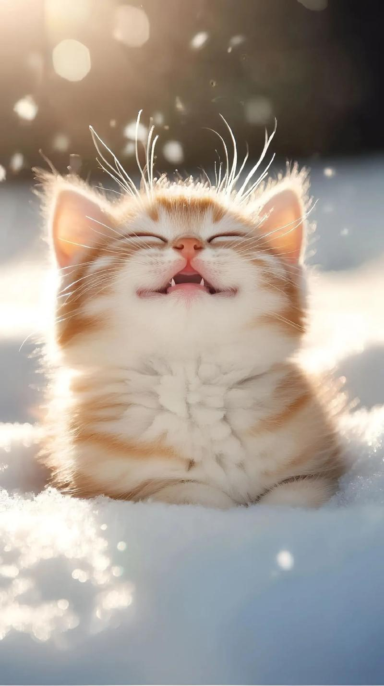

4. Little Orange's Cute Moments
4.1 Local Precious Photos

4.2 Online Cute Cat Photos

Sharing daily moments, feeding tips and cute snapshots of my orange tabby cat "Little Orange"
Breed: Chinese Rural Orange Tabby Cat
Age: 2 years old
Personality: Affectionate, loves dried fish, afraid of baths, enjoys sunbathing
Hobbies: Playing with feather wands, watching birds by the bay window, stealing the owner's water😜
Cute Kitten Photos: LoveMeow (Cute Cat Photo Website)
Cat Feeding Guide: Catster (International Cat Care Website)